See everything. Undo anything.
Move, copy, rename and trash are all reversible. Multi-level ⌘Z, with a toast that says exactly what was undone.
Keyboard-first · macOS
Two folders side by side. One keystroke moves a file across. Every action is undoable.
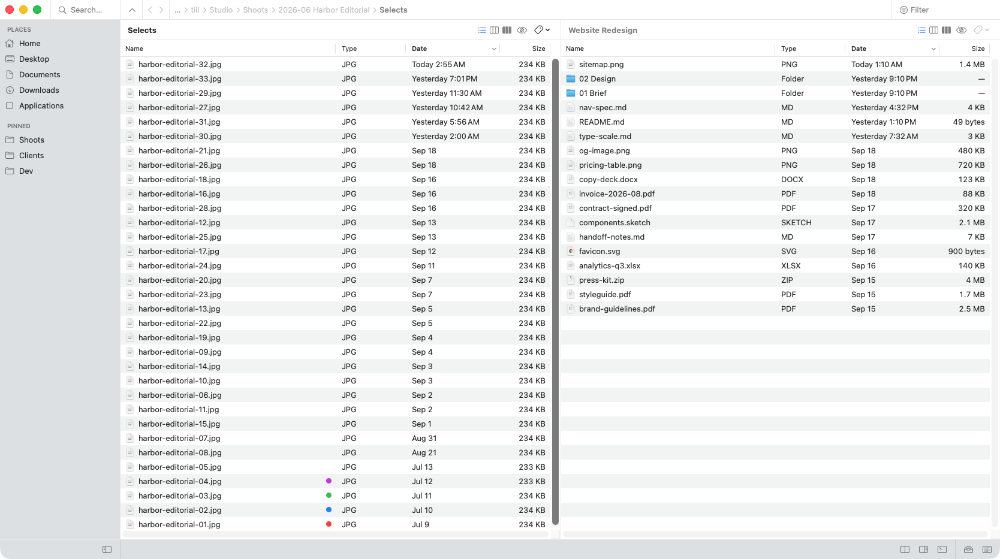
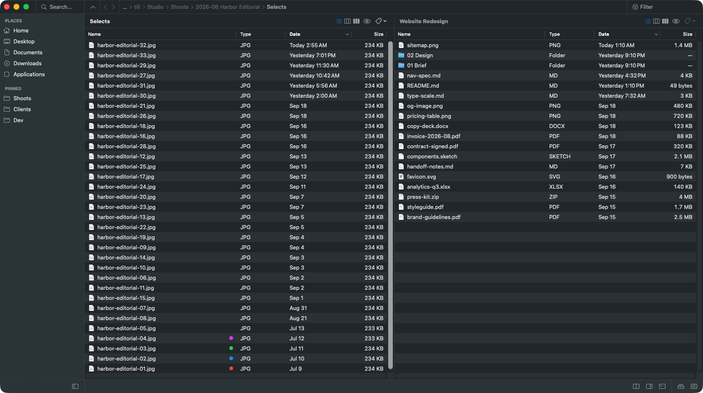
Why it's different
Finder conventions where they exist. Chords where they earn their keep. Every key is rebindable, so your muscle memory just transfers.
Move, copy, rename and trash are all reversible. Multi-level ⌘Z, with a toast that says exactly what was undone.
Native Swift, 2.7 MB to download. No telemetry, no account, no subscription. Everything runs on your Mac.
Real Finder tags that round-trip both ways. Finder's own keys for copy, paste, go-to-folder and Quick Look.
1.0 Move
The active panel is the source, the inactive one is the destination. Select a file, press ⌥⌘→, it lands on the right. Add ⇧ to move instead of copy.
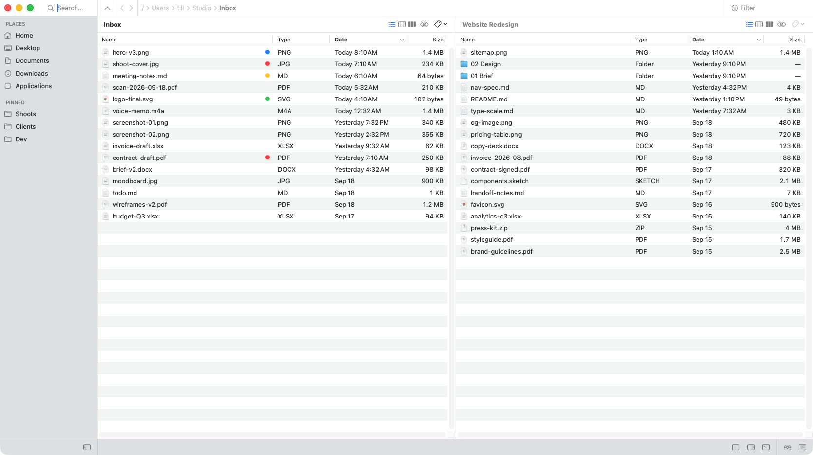

2.0 Stage
⌘⇧S adds the selection to Staging, from any folder. ⌘⇧B shows the set. ⌫ takes a file out of it and leaves the disk alone.
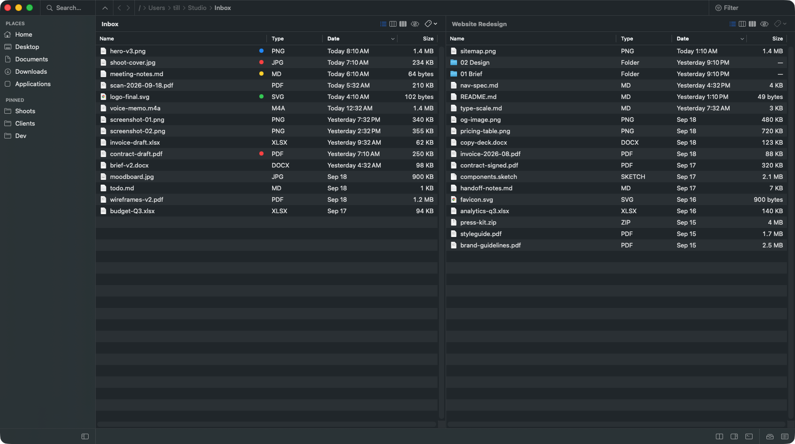
3.0 View
⌘1 turns a panel into brief view, up to three columns of names. ⌘2 turns it into a column browser, one folder per column: land on a folder and its contents open to the right, → steps in, ← steps back. ⌘J opens the built-in terminal.

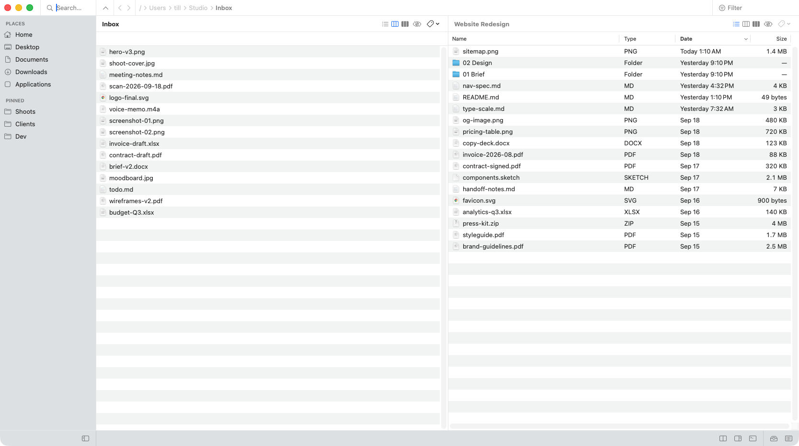
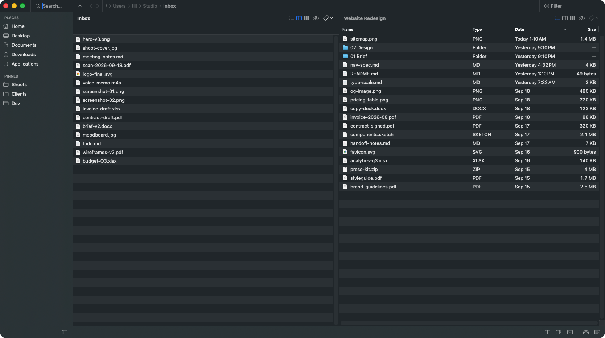
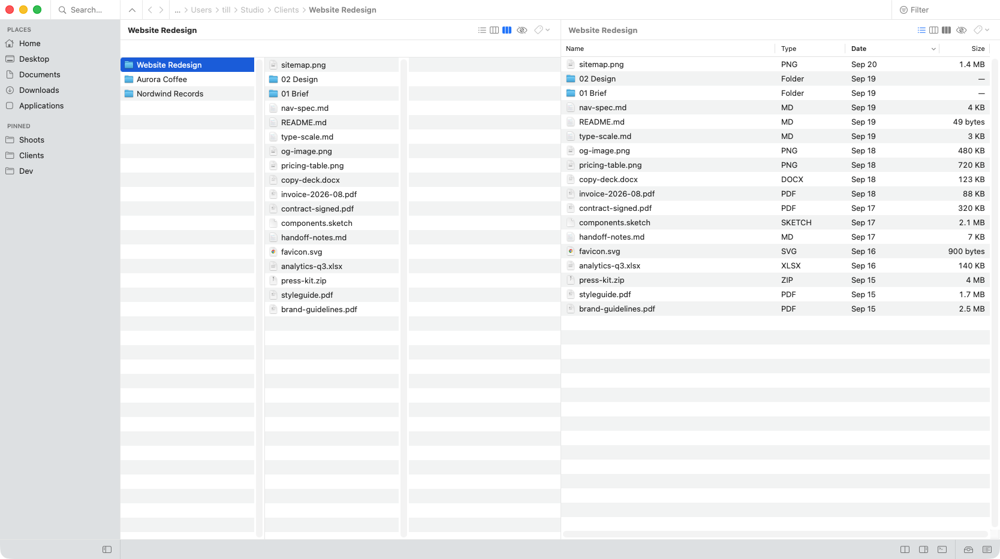
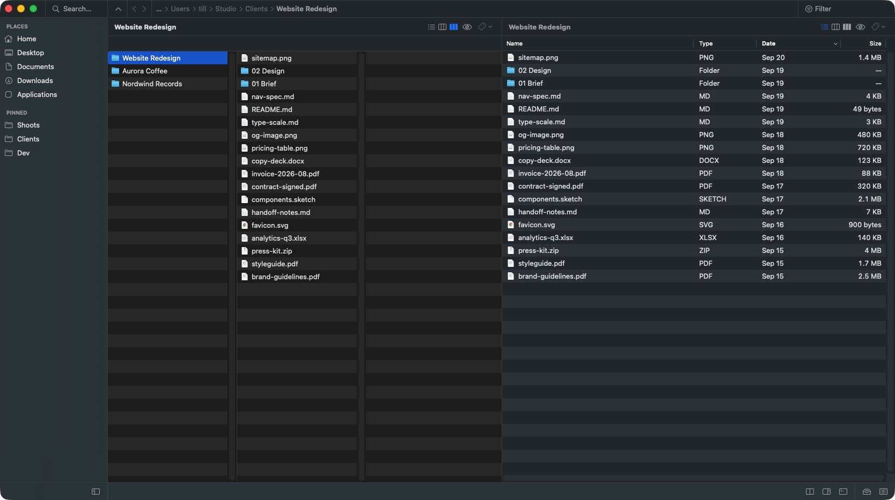
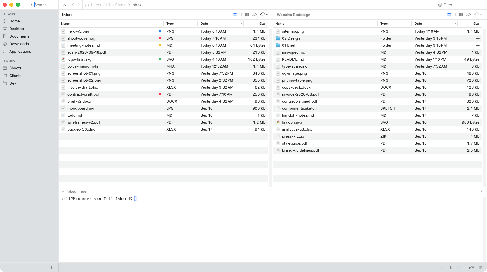
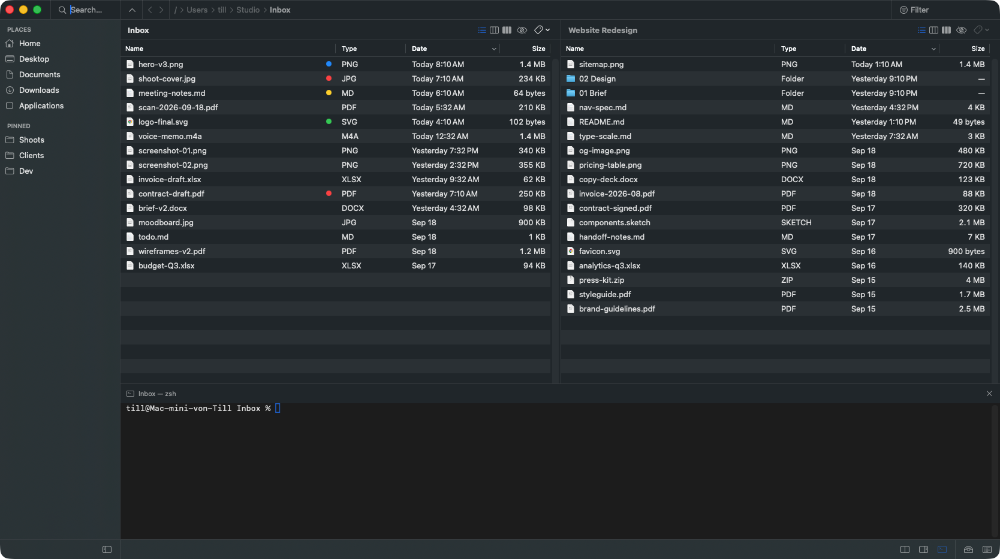
4.0 Extend
The command palette finds any action by name and shows its keys. Gadgets hand the current selection to any app or CLI tool, with no plugin runtime to learn.
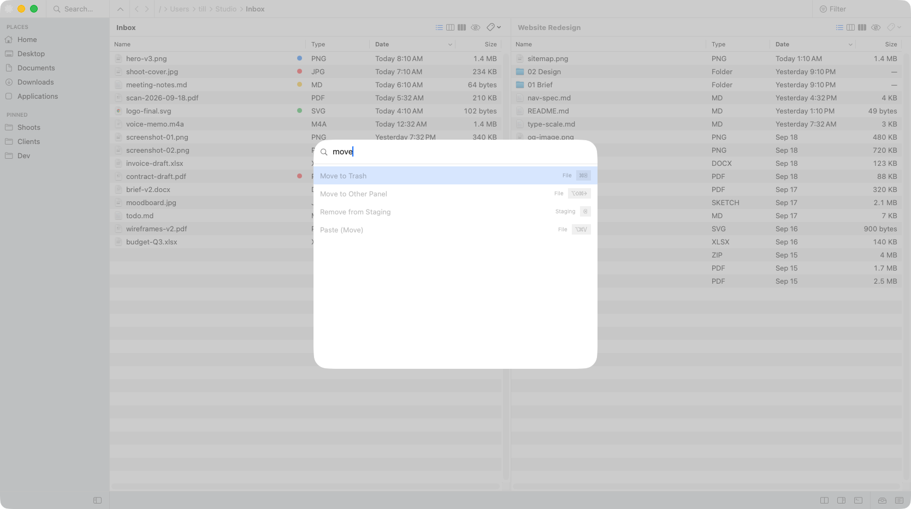
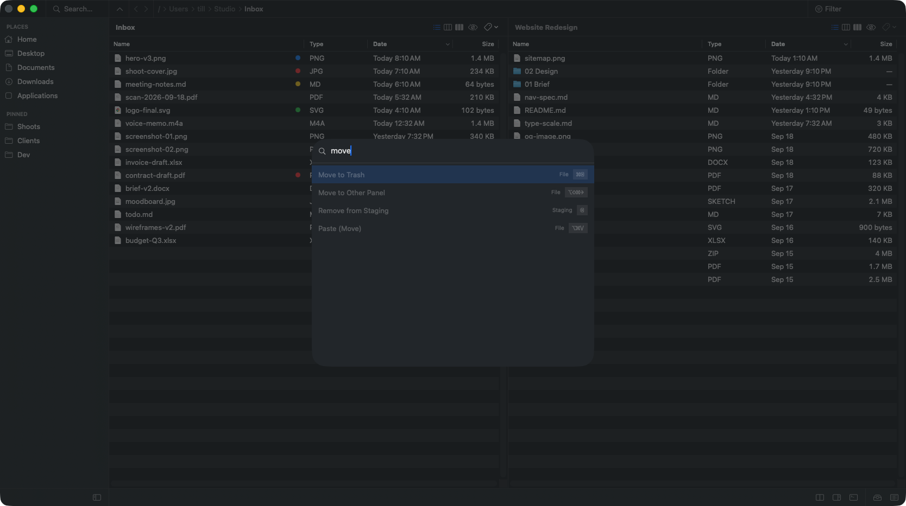
Every command, one place
Compare